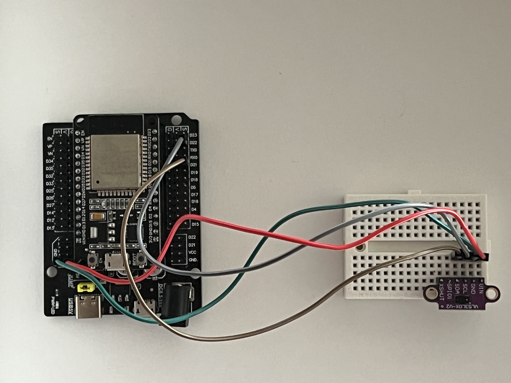
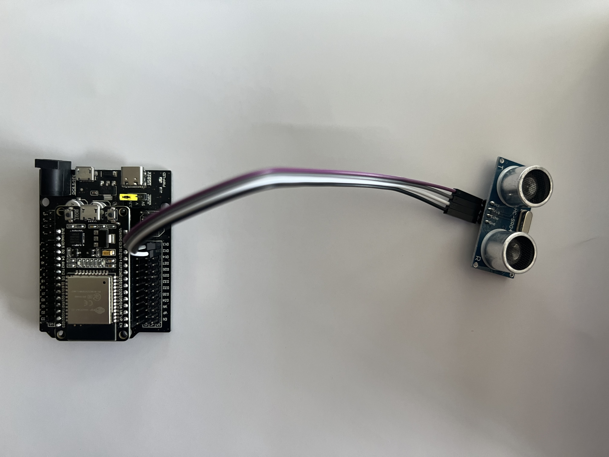
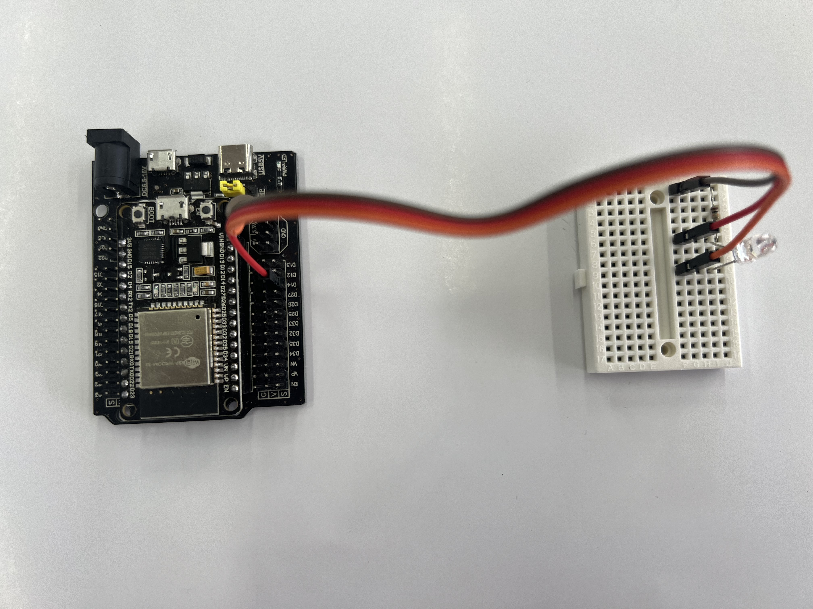
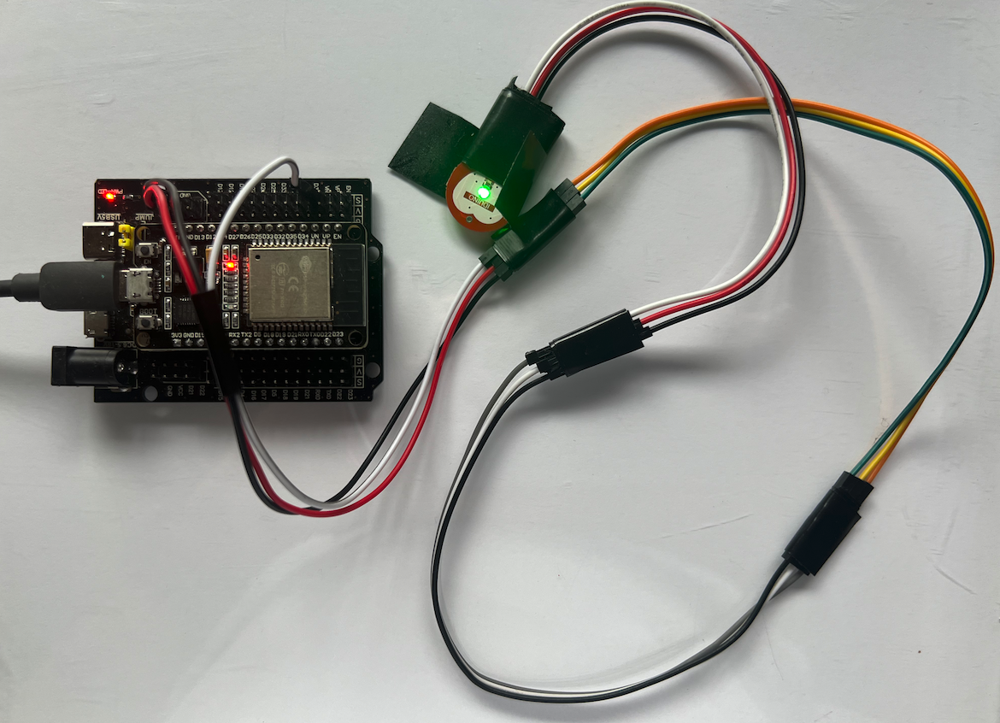

Sensor Plotter with a Serial Port
CIIEC-BUAP
May 19th, 2024
Introduction
This app plots and prints data sent by an ESP32 microcontroller through the serial port using the codes provided to control different sensors. The Arduino IDE software can be used to compile and upload these codes to an ESP32.
This Web App can also be used to perform a Discrete Fourier Transform to analyse the data in the frequency domain. Alternately, you can copy and paste the data here to get a full calculation of the Discrete Fourier Transform.

#include "Adafruit_VL53L0X.h" Adafruit_VL53L0X lox = Adafruit_VL53L0X(); int connect = 1; int previousOK = 0; String result ; unsigned long previousMillis = 0; float deltaT = 100; void setup() { Serial.begin(115200); // wait until serial port opens for native USB devices while (! Serial) { delay(1); } Serial.println("Adafruit VL53L0X test"); if (!lox.begin()) { Serial.println(F("Failed to boot VL53L0X")); while(1); } // power Serial.println(F("VL53L0X API Simple Ranging example\n\n")); } void loop() { if (Serial.available() > 0) { String request = Serial.readStringUntil('\n'); if (request.startsWith("deltaT:")) { deltaT = request.substring(7).toFloat(); } } if (millis() - previousMillis >= deltaT ) { VL53L0X_RangingMeasurementData_t measure; //Serial.print("Reading a measurement... "); lox.rangingTest(&measure, false); // pass in 'true' to get debug data printout! //if (measure.RangeStatus != 4) { // phase failures have incorrect data // Serial.print("Distance (mm): "); if (measure.RangeMilliMeter > 2000 || measure.RangeMilliMeter < 1) { result = String(previousOK) + "," + String(millis() - previousMillis) ; } else { result = String(measure.RangeMilliMeter) + "," + String(millis() - previousMillis) ; previousOK = measure.RangeMilliMeter; } Serial.println(result); previousMillis = millis(); } }

// Conect the ultrasound sensor to +5V #define SOUND_SPEED 0.034 //sound speed in cm/uS const int trigPin = 13; const int echoPin = 12; long duration; float distanceCm; float distanceCmPrevious = 0; int connect = 1; String result ; unsigned long previousMillis = 0; float deltaT = 100; void setup() { Serial.begin(115200); pinMode(trigPin, OUTPUT); pinMode(echoPin, INPUT); } void loop() { if (Serial.available() > 0) { String request = Serial.readStringUntil('\n'); if (request.startsWith("deltaT:")) { deltaT = request.substring(7).toFloat(); } } if (millis() - previousMillis >= deltaT ) { digitalWrite(trigPin, HIGH); delayMicroseconds(10); digitalWrite(trigPin, LOW); duration = pulseIn(echoPin, HIGH); distanceCm = duration * SOUND_SPEED/2; if (distanceCm < 100){ result = String(distanceCm) + "," + String(millis() - previousMillis) ; distanceCmPrevious = distanceCm; } else { result = String(distanceCmPrevious) + "," + String(millis() - previousMillis) ; } Serial.println(result); previousMillis = millis(); } }

int pinADC = 14; int ADCValue ; int connect = 1; int previousOK = 0; String result ; unsigned long previousMillis = 0; float deltaT = 100; void setup() { Serial.begin(115200); } void loop() { if (Serial.available() > 0) { String request = Serial.readStringUntil('\n'); if (request.startsWith("deltaT:")) { deltaT = request.substring(7).toFloat(); } } if (millis() - previousMillis >= deltaT ) { ADCValue = analogRead(pinADC); result = String(ADCValue) + "," + String(millis() - previousMillis) ; Serial.println(result); previousMillis = millis(); } }
float Nrep =10; float deltaT = 100; long reading1; float finalReading1; int connect = 1; String result ; unsigned long previousMillis = 0; void setup(){ Serial.begin(115200); //begin serial communications } void loop(){ if (Serial.available() > 0) { String request = Serial.readStringUntil('\n'); if (request.startsWith("deltaT:")) { deltaT = request.substring(7).toFloat(); } if (request.startsWith("Nrep:")) { Nrep = request.substring(5).toFloat(); } } if (millis() - previousMillis >= deltaT ) { reading1 =0; for(int i = 0; i < Nrep; i++){ reading1 += hallRead(); } finalReading1 = reading1/Nrep; result = String(finalReading1) + "," + String(millis() - previousMillis) ; result += "," + String(Nrep); Serial.println(result); previousMillis = millis(); } }

 // Conect Vcc to 3.3 V and signal to GPIO34 #define s1 34 #define s2 25 float Nrep =40; float deltaT = 20; long reading1; float finalReading1; int connect = 1; String result ; unsigned long previousMillis = 0; void setup(){ Serial.begin(115200); //begin serial communications } void loop(){ if (Serial.available() > 0) { String request = Serial.readStringUntil('\n'); if (request.startsWith("deltaT:")) { deltaT = request.substring(7).toFloat(); } if (request.startsWith("Nrep:")) { Nrep = request.substring(5).toFloat(); } } if (millis() - previousMillis >= deltaT ) { reading1 =0; for(int i = 0; i < Nrep; i++){ reading1 += analogRead(s1); } finalReading1 = reading1/Nrep; result = String(finalReading1) + "," + String(millis() - previousMillis) ; result += "," + String(Nrep); Serial.println(result); previousMillis = millis(); } }
Fourier Analisys
$$\huge \definecolor{energy}{RGB}{0,0,0} \definecolor{freq}{RGB}{0,0,0} \definecolor{spin}{RGB}{0,0,0} \definecolor{signal}{RGB}{0,0,0} \definecolor{circle}{RGB}{0,0,0} \definecolor{average}{RGB}{0,0,0} \color{energy} X_{\color{freq} k} \color{black} = \color{average} \sum_{n=0}^{N-1} \color{signal}x_n \color{spin} e^{-\mathrm{i} \color{circle} 2\pi \color{freq}k \color{average} n/N} = \sum_{n=0}^{N-1} \color{signal}x_n \color{spin} cos( \color{circle} 2\pi \color{freq}k \color{average} n/N) - \mathrm{i}\sum_{n=0}^{N-1} \color{signal}x_n \color{spin} sin( \color{circle} 2\pi \color{freq}k \color{average} n/N)$$
for
$$\huge 0\le k \le N-1 $$